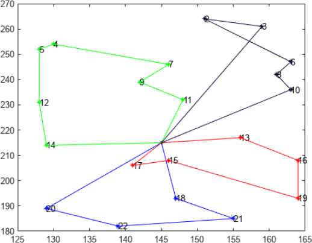
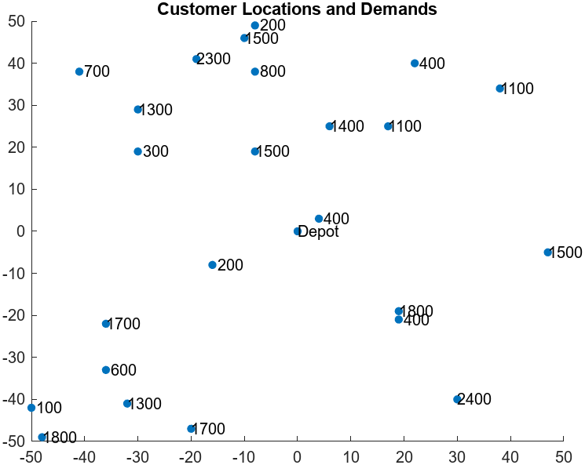
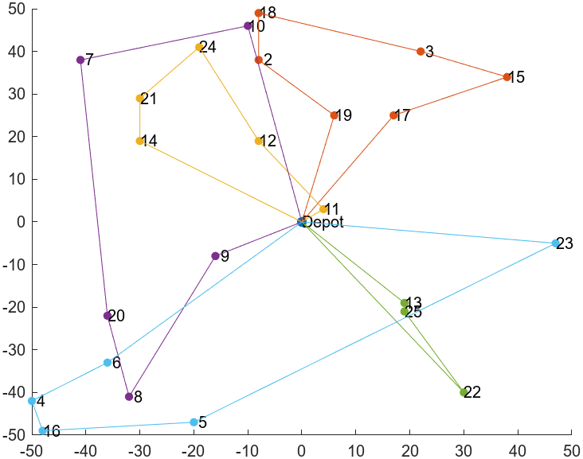

Capacitated Vehicle Routing Problem
Note
Installation Required: This functionality requires MATLAB Support Package for Quantum Computing.
Capacitated vehicle routing is a combination of a knapsack problem and a traveling salesperson problem. The problem is for a vehicle (or set of vehicles) to visit a group of customers that are geographically distributed. The vehicle has a capacity constraint, where the capacity refers to a quantity that the vehicle delivers to each customer. The problem has a central depot, and the vehicle must return to the depot after each visit to a set of customers, or route. The problem is to visit the customers at minimal cost, where the cost is the total length of the route for visiting a group of customers.
The following figure shows four routes originating from a single point, the depot. These routes do not represent a minimal solution, because nodes 2 and 3 (at least) should be visited in the opposite order. The route containing nodes 2 and 3 has a self-intersection, which does not occur in an optimal tour.

To solve a capacitated vehicle routing problem, follow the steps in Feld and coauthors [1]. While Feld gives several solution approaches, this example uses just one:
Create clusters that represent groups of customers visited by a vehicle in a single route. This step is a knapsack problem.
Solve the traveling salesperson problem for each cluster.
Solve the cluster creation problem using a classical algorithm. Solve the traveling
salesperson problems by mapping them to QUBO problems. Solve the QUBO problems using the
solve function, which internally uses the tabu search algorithm.
Problem Data and Variables
Create random integer locations for 24 customers, with random integer demands at the locations from 100 to 2500 in increments of 100. The depot, which is one more location, is at coordinates [0,0].
rng(1) % For reproducibility numCustomers = 24; % Depot at [0 0] makes 25 locations depot = [0 0]; % Depot at the origin loc = [depot; randi([-50,50],numCustomers,2)]; % Integers from -50 to 50, 24-by-2 demand = 100*randi([1,25],numCustomers,1); capacity = 6000;
Plot the locations and demands.
% Plot the locations with demands overlaid figure; scatter(loc(:,1),loc(:,2),'filled','SizeData',25); hold on text(loc(:,1),loc(:,2),["Depot"; num2str(demand)]); title("Customer Locations and Demands");

Create the matrix of distances between customers from the coordinate vector. Use the Pythagorean rule and Euclidean distance.
numLocations = numCustomers + 1; [X,Y] = meshgrid(1:numLocations); dist = hypot(loc(X(:),1)- loc(Y(:),1),loc(X(:),2) - loc(Y(:),2)); dist = reshape(dist,numLocations,numLocations);
Set up variables for the remainder of the example by removing the depot, site 1, from the problem data.
customerCoords = loc(2:end,:); costMatrix = dist; vehicleCapacity = capacity;
Create Clusters
Feld [1] gives the following two-step approach for creating clusters:
Create initial clusters based on the problem coordinates and capacity limits.
Refine the initial clusters to obtain shorter traveling salesperson routes.
For this example, create initial clusters using the following iterative approach:
Start with the customer that is farthest from the depot.
Iteratively add customers one at a time, choosing each customer to add as the one closest to the current mean position of the customers in the cluster. That is, that the second customer added to the cluster is the one closest to the first customer, the third customer is the one closest to the average position of the first two, and so on.
Stop adding customers to the cluster when adding the next one would exceed the capacity constraint. At this event, return to the first step and start a new cluster.
Create the clusters as structures with the fields customers,
center, and demand. Use the
addToCluster helper function to add a customer to the cluster.
clusters = []; % CLUSTER GENERATION % Select the first node of the first cluster [~,idx] = max(costMatrix(1,:)); currentCluster.Customers = idx; currentCluster.Center = customerCoords(idx,:); currentCluster.Demand = demand(idx); unclustered.Coords = customerCoords; unclustered.Customers = 1:numCustomers; unclustered.Coords(idx,:) = []; unclustered.Customers(idx) = []; % While not all the nodes have beed added while ~isempty(unclustered.Customers) % Find the next closest node to the cluster distance = sqrt(sum((currentCluster.Center - unclustered.Coords).^2,2)); [~,nextIdx] = min(distance); next = unclustered.Customers(nextIdx); % Remove the node from the unclustered list unclustered.Coords(nextIdx,:) = []; unclustered.Customers(nextIdx) = []; % If the customer can be added without violating capacity constraints, % add the customer to the current cluster; otherwise, start a new cluster if currentCluster.Demand + demand(next) <= vehicleCapacity currentCluster = addToCluster(currentCluster,next,customerCoords,demand); else clusters = [clusters, currentCluster]; currentCluster.Customers = next; currentCluster.Center = customerCoords(next,:); currentCluster.Demand = demand(next); end end clusters = [clusters, currentCluster];
After creating the initial clusters, you can improve them. To do so, reassign a customer to a different cluster if doing so places the customer closer to the mean position of the new cluster compared to the current cluster, without exceeding the capacity constraint of the new cluster. Continue to perform cluster improvement steps until no more steps are possible, or until 10 improvement steps are made.
Improve the clusters using the addToCluster and
removeFromCluster helper functions.
% CLUSTER IMPROVEMENT iterations = 0; % For each cluster while iterations < 10 for i = 1:numel(clusters) % And each customer within the cluster for customer = clusters(i).Customers % Calculate the customer's distance from the center d_i = sqrt(sum((clusters(i).Center - customerCoords(customer,:)).^2)); % For each alternative cluster for j = [1:i-1, i+1:numel(clusters)] % Calculate the customer's distance to the center of the % alternative cluster d_j = sqrt(sum((clusters(j).Center - customerCoords(customer,:)).^2)); % Move the customer to the alternative cluster if it is closer and % capacity constraints are met if d_j < d_i && clusters(j).Demand + demand(customer) < vehicleCapacity % Remove the customer from the original cluster % and add the customer to the new cluster clusters(i) = removeFromCluster(clusters(i), ... customer, customerCoords, demand); clusters(j) = addToCluster(clusters(j), ... customer, customerCoords, demand); break end end end end iterations = iterations + 1; end
Adjust the customer labels so that they correspond to the original problem, with the depot being site 1 and the first customer being site 2.
nRoutes = numel(clusters); for i = 1:nRoutes clusters(i).Customers = clusters(i).Customers + 1; end
Create and Solve Traveling Salesperson Problems
Each cluster represents a group of customers visited in one vehicle route, which starts at the depot and returns to the depot. For each route, the vehicle should travel the smallest possible distance. This problem is the traveling salesperson problem (TSP) for each cluster.
For each cluster, create a distance matrix for the customers in that cluster. Collect the various TSPs and their solutions in structures. Each structure contains the customers associated with that TSP, the distances between customers, and the solution to the TSP, which is the route with the minimal distance.
Create the TSPs to be solved by conversion to QUBO problems.
TSPsolutions = cell(nRoutes,1);
Routes = cell(nRoutes,1);
customerCoords = loc; % Return depot to listFor each cluster of customers, compute the pairwise distances and formulate the
corresponding TSPs. Convert each TSP to a QUBO problem using the tsp2qubo
helper function. Solve the TSPs using the solvemyTSP helper function.
for rt = 1:nRoutes % Compute pairwise distance cluster = clusters(rt); coords = [depot; customerCoords(cluster.Customers,:)]; M = height(coords); [X,Y] = meshgrid(1:M); dist = hypot(coords(X(:),1)- coords(Y(:),1),coords(X(:),2) - coords(Y(:),2)); % Collect TSP data tsp.CostMatrix = reshape(dist,M,M); tsp.Customers = cluster.Customers; % Solve this TSP TSPsolutions{rt} = solvemyTSP(tsp); Routes{rt} = TSPsolutions{rt}.Route; end
Plot the resulting routes using the plotClusters helper
function.
plotClusters(clusters,loc,Routes)

Display the capacity needed for each route.
d = arrayfun(@(x)x.Demand,clusters)
d =
5000 5800 5400 4600 5700The demand in each route is less than the capacity limit of 6000.
Helper Functions
This code creates the addToCluster helper function. Note that this
helper function uses the updateCluster helper function.
function cluster = addToCluster(cluster,next,customerCoordinates,demandVector) cluster.Customers = [cluster.Customers, next]; cluster = updateCluster(cluster,next,customerCoordinates,demandVector,1); end
This code creates the removeFromCluster helper function. Note that
this helper function uses the updateCluster helper function.
function cluster = removeFromCluster(cluster,next,customerCoordinates,demandVector) cluster.Customers(cluster.Customers == next) = []; cluster = updateCluster(cluster,next,customerCoordinates,demandVector,-1); end
This code creates the updateCluster helper function.
function cluster = updateCluster(cluster,next,customerCoordinates,demandVector,s) % Update the cluster as well as the lists of available coordinates and % customers currentN = numel(cluster.Customers); previousN = currentN - s; % Update center newX = (cluster.Center(1)*previousN + s*customerCoordinates(next,1))/(currentN); newY = (cluster.Center(2)*previousN + s*customerCoordinates(next,2))/(currentN); cluster.Center = [newX,newY]; % Update demand cluster.Demand = cluster.Demand + s*demandVector(next); end
This code creates the plotClusters helper function.
function plotClusters(clusters,customerCoords,Routes) % Plot the result of the clustering algorithm in 2D space. Plot the % routes as well if they are provided. % Plot the depot f = figure; scatter(customerCoords(1,1), customerCoords(1,2),"filled"); ax = f.CurrentAxes; text(customerCoords(1,1), customerCoords(1,2),"Depot"); hold on % Plot each cluster and label customers for i = 1:numel(clusters) customer = clusters(i).Customers; scatter(customerCoords(customer,1),... customerCoords(customer,2),"filled",SizeData=25); % Locations text(customerCoords(customer,1),... customerCoords(customer,2),num2str(customer')); % Labels end % If the routes are provided, plot them if nargin > 2 % Reset color index - 1 is for the depot, so start at 2 colorIdx = 1; for k = 1:numel(Routes) route = Routes{k}; % Advance color index for the next route colorIdx = colorIdx + 1; % Append depot as the start of the route cu = [1 clusters(k).Customers]; tr = cu(route); % Route in original indices for customer = 1:numel(tr) - 1 ax.ColorOrderIndex = colorIdx; % Keep current route color plot(customerCoords(tr(customer:customer+1),1),... customerCoords(tr(customer:customer+1),2)); end ax.ColorOrderIndex = colorIdx; plot(customerCoords([tr(end),tr(1)],1),... customerCoords([tr(end),tr(1)],2)); end end drawnow hold off end
This code creates the tsp2qubo helper function.
function QP = tsp2qubo(dist) % QP = TSP2QUBO(DIST) returns a QUBO problem from the traveling salesperson % problem specified by the distance matrix DIST. DIST is an N-by-N % nonnegative matrix where DIST(i,j) is the distance between locations % i and j. % Copyright 2023 The MathWorks, Inc. N = size(dist,1); % Create constraints on routes A = eye(N); B = ones(N); Q0 = kron(A,B); Q1 = kron(B,A); % Create upper diagonal matrices of distances v = ones(N-1,1); A2 = diag(v,1); Q2 = kron(B,A2); % Q2 has a diagonal just above the main diagonal in each block C = kron(dist,B); Q2 = Q2.*C; % Q2 has an upper diagonal dist(i,j) % Create dist(j,i) in the upper-right corner of each block E = zeros(N); E(1,N) = 1; Q3 = kron(B,E); % Q3 has a 1 in the upper-right corner of each block CP = kron(dist',B); % dist' for D(j,i) Q3 = Q3.*CP; % Q3 has dist(j,i) in the upper-right corner of each block % Add the multipliers M = max(max(dist)); QN = sparse(M*(Q0 + Q1)*N^2 + Q2 + Q3); % Symmetrize QN = (QN + QN.')/2; % Include the constant and linear terms c = -4*ones(N^2,1)*M*N^2; d = 2*N*M*N^2; QP = qubo(QN,c,d); end
This code creates the solvemyTSP helper function. Note that this
helper function uses the solveTSPwithTabu and
convertSolutionToRoute helper functions.
function TSPsolution = solvemyTSP(tsp) % solvemyTSP solves the TSP by first converting it to a QUBO problem % and then using tabu search to find a solution. % Inputs: % tsp: Structure with fields % customers: the customers for the tsp % costMatrix: the cost matrix for the tsp % Outputs: % TSP_solution: Structure with fields % Route: The order of the customers in the best route found. For example, % if there are 5 customers in this tsp, the Route might be [2 3 1 5 4] % for customers [13 6 3 12 7]. % customers: The customers in the current tsp, taken directly % from the tsp input % quboFval: The fval returned by the qubo algorithm n = numel(tsp.Customers); % If the number of customers is less than 3, the solution is trivial and % there is no need to solve the QUBO. if n < 3 TSPsolution.Route = 1:n; TSPsolution.Customers = tsp.Customers; TSPsolution.QuboFval = tsp.CostMatrix(1,2) + tsp.CostMatrix(2,1); return end % Solve with tabu search TSPsol = solveTSPwithTabu(tsp.CostMatrix); % Convert the QUBO solution to a route TSPsolution.Route = convertSolutionToRoute(TSPsol); TSPsolution.QuboFval = TSPsol.BestFunctionValue; TSPsolution.Customers = tsp.Customers; end
This code creates the solveTSPwithTabu helper function. Note that
this helper function uses the tsp2qubo and
checkTSPConstraints helper functions.
function solution = solveTSPwithTabu(costMatrix) % Solves the TSP with tabu search. Convert the TSP to a QUBO % according to the penalty term and return the best feasible solution. % Convert the TSP problem to QUBO Q = tsp2qubo(costMatrix); x = solve(Q); validSolutions = checkTSPConstraints(x); % If no valid solution is found yet, try again up to 10 times if validSolutions == false it = 1; while (validSolutions == false) && it < 10 x = solve(Q); validSolutions = checkTSPConstraints(x); it = it + 1; end end if validSolutions == false solution = []; else solution = x; end end
This code creates the checkTSPConstraints helper function.
function validSolutions = checkTSPConstraints(x) % The solutions are encoded as [x11, x12, x13, ... x21, x23, ...]' % where xij indicates that customer i is visited in the jth position of the % route. To establish that the constraints are satisfied, verify % that each customer is visited only once and each position in the route % has only one customer assigned to it. N = size(x.BestX,1); n = sqrt(N); y = reshape(x.BestX,n,n); % Ensure each customer has only one position assigned r = all(sum(y,1) == 1); % Ensure each route position (row) on has one customer assigned s = all(sum(y,2) == 1); validSolutions = r && s; end
This code creates the convertSolutionToRoute helper function.
function Route = convertSolutionToRoute(sol) % The solutions are encoded as [x11, x12, x13, ... x21, x23, ...]' % where xij indicates that customer i is visited in the jth position of the % route. Decode the solution into a route. solution = sol.BestX; n = sqrt(numel(solution)); selected_indices = find(solution); order = mod(selected_indices - 1, n) + 1; [~, node_order] = sort(order); nodes = 1:n; Route = nodes(node_order); end
References
[1] Feld, Sebastian, Christoph Roch, Thomas Gabor, Christian Seidel, Florian Neukart, Isabella Galter, Wolfgang Mauerer, and Claudia Linnhoff-Popien. A Hybrid Solution Method for the Capacitated Vehicle Routing Problem Using a Quantum Annealer. Available at https://arxiv.org/abs/1811.07403.
See Also
Functions
Objects
qubo|tabuSearch|qaoa